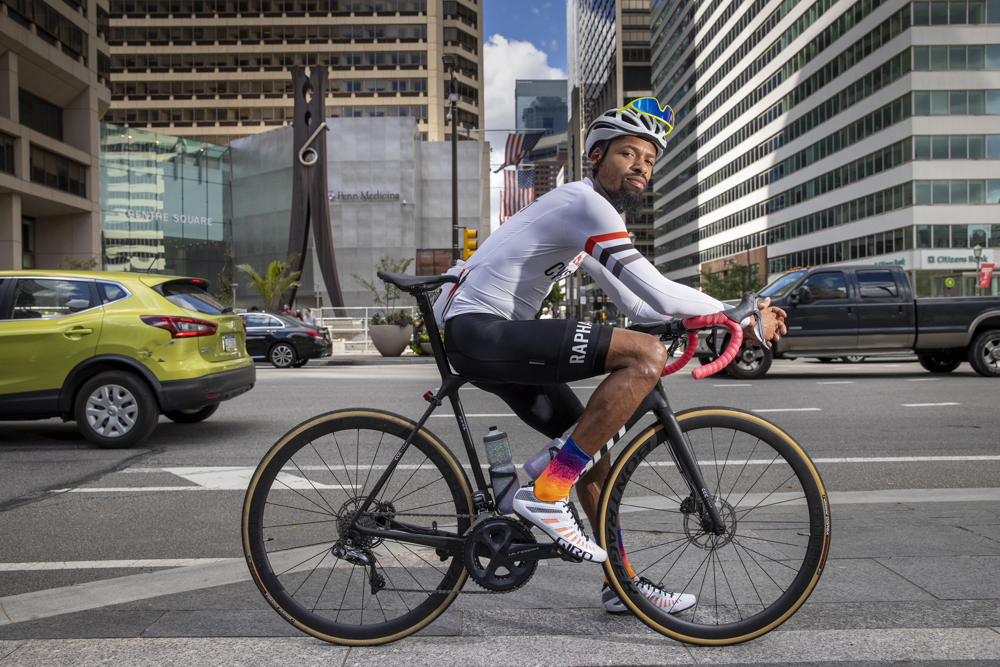
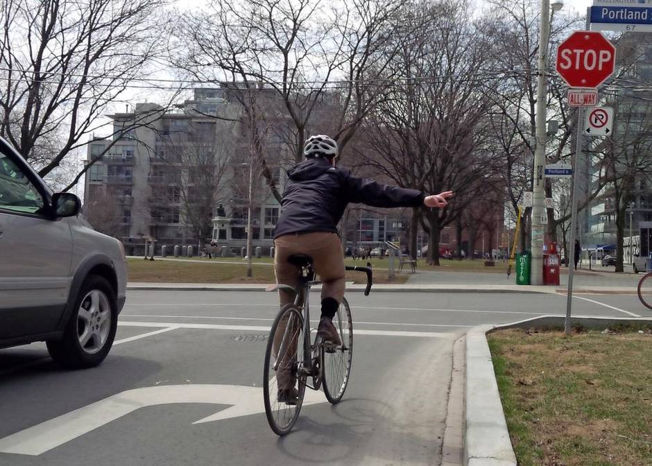

Bike Safety
scroll downAlways wear a helmet.
Helmets lower the risk of serious head injuries by 60% by absorbing some of the impact. Even if you think you don't need a helmet because you're "good at cycling," something unexpected, like a car collision, can always occur.
Follow traffic laws.
Always stop at stop signs and look for incoming traffic, and wait for cars to stop completely before you proceed through an intersection. Always pay attention to the road and your surroundings so that when something unexpected happens, you can be as ready as possible.
Be visible and predictable.
Along with protecting your brain, helmets also make you more visible to drivers. You can also wear bright clothing during the day and add lights to your bike at night to enhance your visibility. Minimize riding on the sidewalk since doing so in Philadelphia is illegal and could cause problems for pedestrians as well as drivers who might not notice you. Give turn signals to drivers by pointing your arm in the direction you're turning.
cyclist motioning signal to turn right
Have a plan.
Plan out a route before you commit to it. If you think that cycling is too dangerous where you live, it is better to err on the side of caution. If a particular road seems too dangerous to bike on, take a different route if possible.